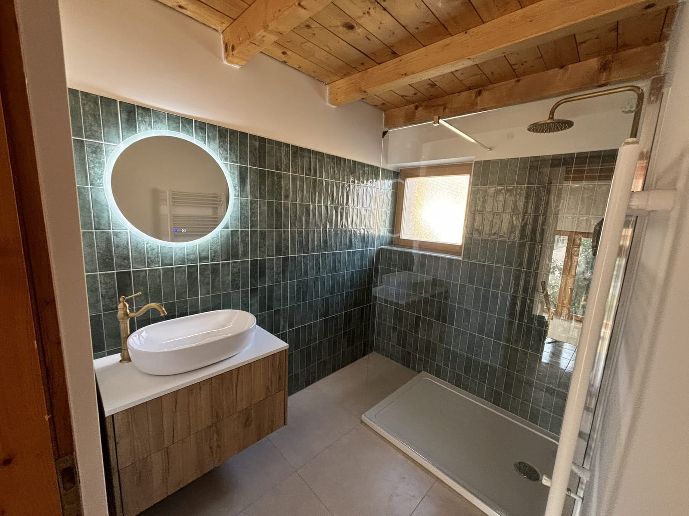

Teljes körű fürdőszoba felújítás,
egy kézben.
Teljes körű fürdőszoba felújítás Sopronban, bontástól a kulcsátadásig minden munkafázis nálunk fut össze: gépészet, vízszigetelés, burkolás, villanyszerelés és szaniterek, egyetlen felelős kivitelezővel, prémium anyagokból, 2 év garanciával. És végig kínosan tisztán dolgozunk: pormentes kivitelezés, napi takarítás, védett otthon.

Öt szakma, egy összehangolt kivitelezés
A felújításhoz nem kell felborítanod az egész otthonod.
A felújítás nálunk nem egyenlő a felfordulással. A lakott tereket gondosan leválasztjuk és megóvjuk, a port már a keletkezése helyén kezeljük, a munkanap végén pedig tiszta, rendezett munkaterületet hagyunk magunk után.
-
Pormentes kivitelezésPorvédő ajtó, fóliás leválasztás és réskitöltés zárja el a munkaterületet a lakott helyiségektől.
-
Napi takarításMinden munkanap végén feltakarítunk; az anyagokat és a szerszámokat rendezetten hagyjuk hátra.
-
Védett lakókörnyezetBútorok, közlekedési útvonalak és a meglévő padló végig takarás alatt, sérülésmentesen.
Lépésről lépésre, kattints a részletekért
Átlátható, jól strukturált folyamat: pontosan tudod, mi vár rád az első egyeztetéstől a kulcsátadásig.
A felújítás egy rövid egyeztetéssel indul, ahol átbeszéljük az elképzeléseket, a fürdőszoba jelenlegi állapotát és a kívánt stílust.
- Fotók vagy alaprajz küldése nagyban segíti az első konzultációt.
A pontos árajánlathoz személyes felmérés szükséges. A helyszínen:
- pontos méreteket veszünk fel,
- ellenőrizzük a víz- és lefolyó kiállásokat,
- átbeszéljük a műszaki lehetőségeket,
- javaslatokat adunk a praktikusabb és esztétikusabb kialakításra,
- szükség esetén látványtervet készítünk.
Külön figyelmet fordítunk arra, hogy a megoldás hosszú távon is megbízható és könnyen használható legyen.
A felmérés után részletes árajánlat készül, amely tartalmazza:
- a munkafolyamatokat,
- a vállalt kivitelezési tartalmat,
- az anyagigényeket,
- a várható ütemezést,
- a fizetési ütemezést.
Itt véglegesítjük a burkolatokat, szanitereket, zuhanymegoldásokat, a világítást és a többi részletet.
A munkakezdés előtt kiemelten figyelünk a tisztaságra és a pormentes kivitelezésre. Ennek része:
- közlekedési útvonalak védelme,
- takarás,
- csúszásmentes padlóvédelem,
- porvédő ajtó használata,
- napi takarítás.
Célunk, hogy a felújítás a lehető legkevesebb kellemetlenséggel járjon.
A régi burkolatok, szaniterek és vezetékek bontása után előkészítjük a helyiséget az új rendszerre. Szükség esetén:
- aljzatjavítást,
- faljavítást,
- szerkezeti módosításokat,
- előtétfal építést is végzünk.
Ebben a szakaszban készülnek el:
- víz- és lefolyó vezetékek,
- zuhany és WC kiállások,
- Geberit rendszer,
- elektromos kiállások,
- világítás előkészítése,
- elszívás kialakítása.
A pontos méretezésre és használhatóságra kiemelt figyelmet fordítunk.
A fürdőszoba egyik legfontosabb része a megfelelő vízszigetelés. Csak megfelelő technológiával és minőségi anyagokkal dolgozunk, különösen a zuhanyzónákban.
Az ügyfél igénye alapján készülhet:
- hagyományos csempeburkolat,
- nagyméretű lap,
- mikrocement felület,
- SPC/PVC falpanel.
A kivitelezés során törekszünk a modern, letisztult megjelenésre és a könnyű tisztíthatóságra.
A burkolás után beépítjük:
- zuhanytálcát vagy walk-in zuhanyt,
- zuhanyfalat,
- WC-t, mosdót,
- csaptelepeket,
- bútorokat, kiegészítőket.
Ezután elvégezzük a végső szilikonozást, finombeállításokat és ellenőrzéseket.
A munka végén kitakarítjuk a munkaterületet, és közösen átadjuk a kész fürdőszobát. Az átadás során:
- minden funkciót ellenőrzünk,
- bemutatjuk a használatot,
- átadjuk a szükséges információkat és a garanciát.
Komplett felújítás, kézben tartva
Komplett fürdőszoba-felújítás
Bontástól a kulcsátadásig: gépészet, vízszigetelés, burkolás, villanyszerelés és szaniterek, egyetlen felelős kivitelezővel, prémium anyagokból.
Részletek Teljes körűIngatlanfelújítás
Lakás, családi ház vagy egyetlen helyiség teljes felújítása, falazástól a festésig, minden szakmával összehangolva, ütemezetten.
RészletekBeszéljük át a fürdőszobádat.
Egy ingyenes helyszíni felmérés után pontosan tudni fogja, mibe kerül és meddig tart a felújítás.